Marie Curie
- Consulta a Jesús
- Fábulas de Colombia
- Metodo Corima
- Arbol
- Flor
- Fruto
- Estrellas Pequeñas
- Nostradamus
- La Ruta del Sol
- Fabula de Corima
- Productos y Servicios
- Mensajeros Celestiales
- Juguemos
- Articulos
- Estrellas Humanas
- Herramientas
- Plantas Milagrosas
- Adorables Fechas
- Videos

Visita al Mundo de los Valientes Antiguos, a Imagen y Semejanza del Creador
Había una vez una niña, que nació el 7 de Noviembre de 1867 en Varsovia la capital de la sufrida Polonia, en el tiempo de la Rusia zarista. Era la quinta hija, la llamaron MARYA SALOMÉA SKLODOWSKA BOGUSKA.
Sus padres:
WLADISLAW SKLODOWSKA |
Y |
BRONISLAWA BOGUSKA |
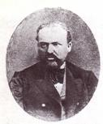 |
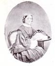 |
El
padre era profesor de física y matemáticas y la madre maestra, ama de casa, pianista
y cantante.
Sus hermanos se Llamaban…
|
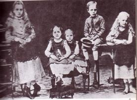 |
Sofía, Ghela, Marya, José y Bronia. |
 |
|||
| 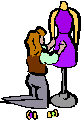 | |||
Como los recursos escaseaban, la madre remendaba la ropa y hasta fabricaba los zapatos para sus 5 hijos y los protegía de la tuberculosis que había contraído.
El padre para mejorar los ingresos fundó un internado para varones, dándoles casa, comida, e instrucción, así entre los ruidos de los alumnos y los ladridos del perro Lancet, la intimidad familiar terminó.
Marya de 10 años, ingresó a un internado privado, aún siendo la más pequeña de 25 niñas, era una niña valiente y aplicada, dominaba historia, literatura, alemán, francés, ruso…
Como estaba prohibido por los rusos la enseñanza del polaco, la maestra eligió a Marya para que presentara el examen de revisión ante el inspector ruso. Marya recitó el Padrenuestro, leyó fábulas de hadas de Krylov y todo lo contestó en perfecto ruso, como le exigía el examinador, así salvó el internado del cierre fatal.
El tiempo feliz para Marya y sus hermanos eran las vacaciones. Jugaban en el campo y disfrutaban del ping-pong verbal, con un intercambio de palabras, adivinanzas, fuga de letras, objetos de prendas sencillas y colores propuestos.
Las hermanitas Sklodoswska, fueron invitadas a la hacienda campestre de una rica condesa, un verano maravilloso y alocado. Aprendieron a nadar, a remar en el río a pescar, unas veces dormían de día otras de noche, bailaban, cantaban, reían y hacían cómicas representaciones de teatro, bromas y versos.
¨Esperemos que
unos muchachos a un picnic nos inviten,
uno para cada
una a la par y siguiéndoles el ejemplo,
subamos cuanto
antes los escalones del altar¨
Pero llegaron más dificultades económicas, el padre inició un internado para jovencitos y uno de ellos en el invierno se enfermó de tifus y Sofia de 14 se contagió, la Madre ya muy delicada, vió partir a su hija, rodeada del padre y de sus 4 hermanitos.
Luego fue evidente que su madre estaba muriendo, y el hogar se llenó de lágrimas, con frecuencia Marie rompía a llorar sin consuelo, hubiera preferido que Dios se la llevara en vez de su adorada Madre de solo 42 años.
Pero la vida seguía, Maria y Kazia asistían a la escuela todos los días, María decía que la escuela le encantaba y dos años le faltaban para su graduación. Cada una llevaba su almuerzo en una bolsa de tela, un pan, una manzana y dos salchichas polacas, también tomaban clases de danza.
Uno de los sitios preferidos eran los jardines de Sajonia, asi seguían con sus deliciosos juegos de fuga de palabras, para repasar todo lo aprendido en clase. Si llovía, jugaban a cruzar los charcos más grandes sin mojarse los pies y si pasaban al frente de un monumento de los llamados traidores polacos, todos escupían.
El 12 de Septiembre, a los 15 años, Marie terminó el colegio secundario y fue la mejor de su clase. Recibió la medalla de oro, de manos del encargado de la educación en la Polonia rusa, siguiendo los pasos de Bronia y Joseph. Recibió libros como premio.
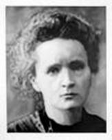
Joseph y María colocaron un aviso en el periódico, para dar clases a particulares. ¨Joven bachiller ofrece clases de aritmética, geometría, y francés¨
Experiencia difícil teniendo que atravesar la ciudad a pie en el crudo invierno y enseñar a alumnos perezosos, testarudos e ignorantes, tan desorganizados que se olvidaban de pagarles.
Después de un año decepcionante, Marie decidió abandonar la casa y trabajar como Institutriz y esperaba amar a la familia con la que iba a vivir.
Pero la experiencia la hizo sentir muy mal. Decía, ¨No le desearía a mi peor enemigo vivir en un infierno como este, hablan francés como un deshollinador, derrochan dinero, pero ahorran el aceite para las lámparas. Tienen cinco sirvientes, pero están sumidos en la más profunda estupidez, el escándalo y el chisme los rodean, hay que evitar el contacto con personas que se han corrompido por el dinero¨.
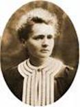
Mientras tanto Bronia la mayor de las hermanas Sklodowska quería estudiar medicina, y como a las mujeres no les permitían entrar a las facultades polacas, controladas por los rusos, escogió a Paris. Ya tenía el dinero para el viaje y los estudios. Pero comprobó que no podría sobrevivir ni siquiera en el barrio Latino, el más barato.
Entonces llegaron a un acuerdo, Marie aceptaría otra mejor familia Y seguiría de institutriz. Solo tenía 18 años, y con su salario subsidiaría a Bronia hasta que se graduara y consiguiera trabajo como médica.
| 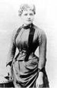 |
Después Bronia mantendría a Marie en Paris hasta que ella se graduara. Marie dedicaba sus noches a sus propios estudios y si llegaba a Paris se concentraría en la matemática y la física que era lo que más le gustaba.
En su nuevo oficio logró un grupo de nuevos estudiantes, 15 jóvenes campesinos de padres analfabetos, que mejoraban sus ingresos, pero le preocupaba que fuera demasiado tarde para tratar de educar a esos jóvenes.
Pensaba que los dones estaban escondidos y muy desperdiciados. Ella se repetía, ¨Tengo que mirar el lado positivo, todos los jóvenes son inteligentes, hay que evitar el ocio, la ignorancia estúpida y las fiestas interminables, que no desarrollan la mente, porque los vuelven más estúpidos y les acaba arruinando la inteligencia
¨Y llegó PARIS, la Ciudad Luz del Mundo esperaba su Inteligencia, su Voluntad y Palabra…
| 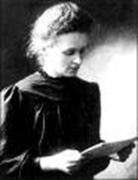 | 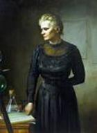 | ||||
Estudiar, Aprender, Investigar… Desde una pobre buhardilla de un quinto piso, con cama y un asiento y un apetitoso menú… Marie desayunaba pan con mantequilla, al almuerzo, mantequilla con pan, cena, pan con mantequilla… y nada mas…
Y llegó el AMOR, conoció a Pierre Curie Depoully, quien la amó, la admiró la respetó, y con ella investigó…
Y llegó el amor celebrado en BICICLETA, una luna de miel con ramo de flores en el manubrio, amor y compromiso once años compartidos como pareja y dos luceros completaron su dinastía, Irene y Eva…
| 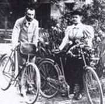 | 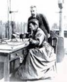 |